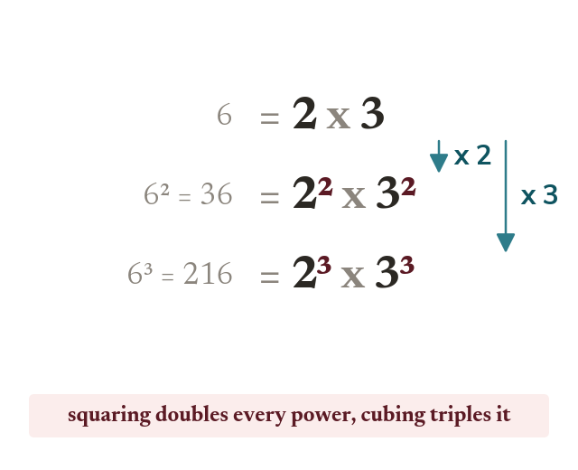
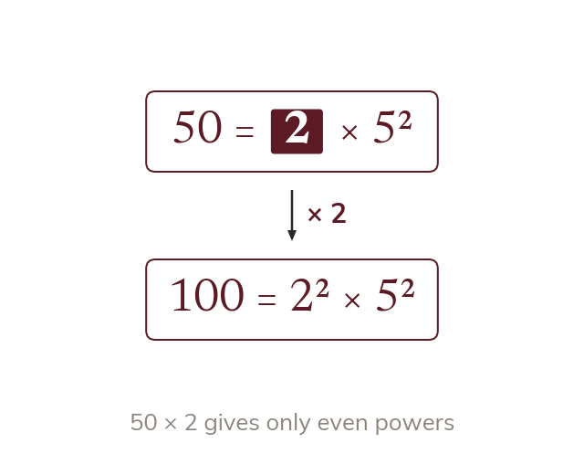
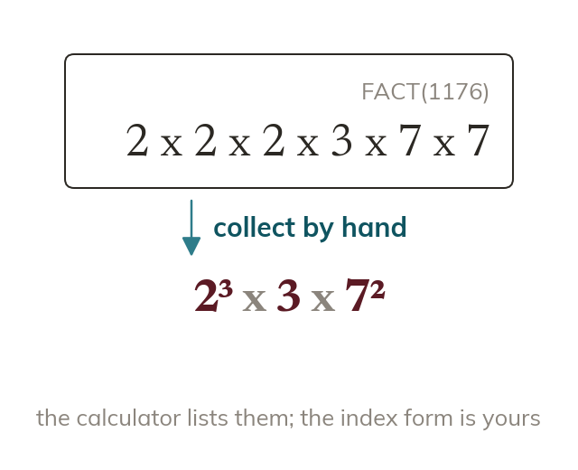
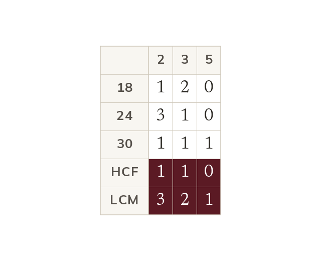

Topic 8.1 · Prime Factors and Calculation Skills · Lesson 2 of 5
What Prime Factors Reveal
A number's prime factorisation doesn't just decompose it - it reveals hidden properties, like whether it's a perfect square, and lets you handle three numbers at once instead of two. Today you'll use the pattern in the powers to spot squares and cubes, and use your calculator to decompose numbers too large to tree by hand.
By the end you’ll know…
A square number has only even powers in its prime factorisation, because squaring doubles every power.
A cube number has only powers that are multiples of three, for the same reason.
The smallest multiplier making a number square is the product of the primes whose powers are odd.
For three numbers, the HCF takes the lowest power of each prime shared by all three and the LCM the highest power of every prime appearing in any of them.
A calculator's FACT function gives a prime factorisation directly, which matters for numbers too large to tree by hand.
By the end you can
G5Use prime factor decomposition to determine whether a number is a square or a cube, and find the smallest multiplier that makes it one.
G4Use the calculator's FACT function to decompose large numbers, and find the HCF and LCM of three numbers.
Work down the page at your own pace. Write every answer in your book first, then click to check it.
01
Do Now
About 5 minutes
1
Is 51 prime? Justify your answer by finding a factor pair.
No - 51 = 3 × 17, so it has factors other than 1 and 51.
2
Write 2×2×2×2 using index notation.
2⁴.
3
Work out 6² and the square root of 49.
36; 7.
4
Work out 3³.
27.
Remember these?
LAST LESSONExpress 84 as a product of its prime factors in index form.
84 = 2² × 3 × 7.
LAST WEEKThe probability it rains tomorrow is 0.3. What is the probability it does not rain?
1 − 0.3 = 0.7.
LAST TERMReflect the point (2, 5) in the line y = x.
(5, 2) — reflecting in y = x swaps the coordinates.
LAST YEARFind the mean of 4, 7, 9 and 12.
Total 32 ÷ 4 = 8.
02
Learn
Read each card, then follow the worked examples one step at a time.

Squares and cubes
Squaring doubles every power in the prime factorisation. A square number has only even powers. Cubing triples them, so a cube has powers in multiples of 3.
Squaring a number doubles every power in its prime factorisation, so a square number's prime factorisation has only even powers. Cubing triples every power, so a cube number's prime factorisation has only powers that are multiples of 3.

Smallest multiplier to make a square
Odd powers stop a number being square. Multiply by each odd-power prime once. That product is the smallest multiplier.
If a number isn't already a square, the primes with an odd power are what's stopping it. Multiplying by exactly those primes (each once) turns each odd power into the next even power - so the smallest multiplier that makes the number square is the product of the primes whose powers are odd.
SQUARE OR CUBE?
108 = 2² × 3³. Is 108 a square number? Is it a cube number? If not a square, find the smallest number to multiply it by to make it one.
Check squarepowers are 2 and 3. 2 is even, but 3 is odd - not every power is even, so 108 is not a square number.
Check cubepowers are 2 and 3. 3 is a multiple of 3, but 2 is not - not every power is a multiple of 3, so 108 is not a cube number.
Find the multiplierthe prime with an odd power is 3 (power 3, which is odd). Multiplying by one more 3 takes its power from 3 to 4, which is even.
Multiply by 3108 × 3 = 2² × 3⁴
= 324
Check324 = 18² (18
= 2 × 3²), so 324 is indeed a square number
YOUR TURN · a
Given 18 = 2 × 3², is it square, and what smallest multiplier makes it so?
not a square, because the power of 2 is odd; multiplying by 2 gives 2² × 3² = 36 = 6².
YOUR TURN · b
200 = 2³ × 5². Is 200 a square number? Is it a cube number? If not a square, find the smallest multiplier that makes it one. (Hint: check each power - even? a multiple of 3?)
not square (2³ has odd power), not cube (2 is not a multiple of 3), multiply by 2 to get 2⁴ × 5² = 400 = 20².
03
Check your understanding
Pick an answer. If it's wrong, the feedback tells you which mistake it was.
Is 2³ × 3³ a square number?
Not quite. Matching powers isn't the test. Each power must be even, and 3 is odd.
Yes. Both powers are 3, which is odd, so it isn't a square number.
Not quite. Each power is 3, which is odd. A square needs every power even.
Not quite. You can tell from the powers: every one must be even.
What is the smallest number to multiply 2³ × 3² × 5 by, to make it a square number?
Yes.2³ needs one more 2 and 5 needs one more 5: × 2 × 5 = 10.
Not quite. One more 2 makes 2⁴, which is even. You don't need three more.
Not quite. One more of each is enough: 2 × 5 = 10.
Not quite.5 has a power of 1, which is odd too. Multiply by 5 as well.
Which of these could be a cube number, based only on its prime factorisation?
Not quite. Even powers make a square. A cube needs every power to be a multiple of 3.
Yes.3, 6 and 9 are all multiples of 3, so it's a cube.
Not quite. The power 2 isn't a multiple of 3. Every power must be.
Not quite.2 isn't a multiple of 3. A cube needs powers like 3, 6 or 9.
04
Practise
mark as you go
Checkpoint.432 = 2⁴ × 3³. Is 432 a square number? Is it a cube number? If it isn't a square, find the smallest number to multiply it by to make it one. Show your working - I'll check it before you move on.Show your teacher before you go on
1
144 = 2⁴ × 3². Is 144 a square number? Is it a cube number?
Square: both powers are even (12²) Not a cube: 4 and 2 are not multiples of 3
2
216 = 2³ × 3³. Is 216 a square number? Is it a cube number?
Not a square: the powers are odd Cube: both powers are 3 (6³)
3
72 = 2³ × 3². Find the smallest number to multiply 72 by to make a square number.
The power of 2 is odd: multiply by 2 72 × 2 = 144 = 2⁴ × 3² = 12²
4
50 = 2 × 5². Find the smallest number to multiply 50 by to make a cube number.
Powers must reach 3: multiply by 2² × 5 = 20 50 × 20 = 1000 = 10³
5
180 = 2² × 3² × 5. Find the smallest number to multiply 180 by to make a square number.
Only the power of 5 is odd: multiply by 5 180 × 5 = 900 = 30²
EXT
Is 2⁶ × 3⁶ a square number, a cube number, or both? Explain.
Both: 6 is even and a multiple of 3 It is (2³ × 3³)² = 216² and (2² × 3²)³ = 36³
05
Learn
Read each card, then follow the worked examples one step at a time.

Calculator FACT
For large numbers, the FACT key lists the prime factors. Collect the repeated primes into index form yourself.
For numbers too large to factor tree by hand, the calculator's FACT function gives the prime factorisation directly - the primes it lists still need collecting into index form by hand, since the calculator lists them as a plain product.

HCFLCM of three numbers
The HCF takes the lowest power of each prime in all three numbers. The LCM takes the highest power of every prime in any. Shown for 18, 24 and 30.
The HCF of three numbers is the product of the LOWEST power of each prime that appears in ALL THREE - a prime missing from even one of them is excluded, the same as for two numbers. The LCM is the product of the HIGHEST power of every prime appearing in ANY of the three - even a prime found in only one of them is included.
HCF AND LCM OF THREE
A calculator's FACT function decomposes 5929 as 7 × 7 × 11 × 11. Collecting into index form: 5929 = 7² × 11².
Find the HCF and LCM of 24, 36 and 60 using their prime factorisations.
Factorise 2424 = 2³ × 3
Factorise 3636 = 2² × 3²
Factorise 6060 = 2² × 3 × 5
HCFfor each prime, take the lowest power PRESENT IN ALL THREE. Prime 2 appears in all three, lowest power is 2² (from 36 and 60). Prime 3 appears in all three, lowest power is 3¹ (from 24 and 60). Prime 5 appears in only one (60), so it's excluded entirely. HCF = 2² × 3
= 12
LCMfor each prime, take the highest power appearing in ANY of the three. Prime 2's highest power is 2³ (from 24). Prime 3's highest power is 3² (from 36). Prime 5 appears once, at power 5¹ - it's still included. LCM = 2³ × 3² × 5
= 360
YOUR TURN · c
Find the HCF and LCM of 8, 12 and 20 using their prime factorisations.
8 = 2³, 12 = 2² × 3, 20 = 2² × 5; only 2 is in all three, at lowest power 2², so HCF = 4, and LCM = 2³ × 3 × 5 = 120.
YOUR TURN · d
Find the HCF and LCM of 18, 30 and 45 using their prime factorisations. (Hint: decompose each first - 18=2×3², 30=2×3×5, 45=3²×5 - then check which primes appear in ALL THREE for the HCF, and collect every prime for the LCM.)
HCF: 2 not in 45 (excluded), 3 in all three (lowest power 3¹), 5 not in 18 (excluded) → HCF=3. LCM: 2¹ × 3² × 5¹ = 90.
06
Check your understanding
Pick an answer. If it's wrong, the feedback tells you which mistake it was.
For the HCF of 12 (=2²×3), 18 (=2×3²) and 20 (=2²×5), which primes should be included?
Not quite. The HCF uses only primes in all three. 3 isn't in 20, and 5 is only in 20.
Yes. Only 2 appears in all three numbers.
Not quite.3 isn't in 20. HCF primes must be in every number.
Not quite.3 isn't in 20. HCF primes must be in all three numbers.
For the LCM of 8 (=2³), 12 (=2²×3) and 20 (=2²×5), which primes should be included?
Not quite. Shared primes only is the HCF rule. The LCM uses every prime.
Not quite. The LCM needs every prime from any of the numbers, so include 5.
Yes. The LCM uses every prime from any of the numbers: 2, 3 and 5.
Not quite. Take the highest power of each prime: 2³, 3 and 5.
A calculator's FACT function shows 2, 2, 2, 5, 5 for a number. What is the correct index form?
Not quite. Collect the repeats into powers: three 2s and two 5s.
Not quite. Count each prime separately: three 2s and two 5s.
Yes. Three 2s and two 5s: 2³ × 5².
Not quite. There are three 2s and two 5s, so it's 2³ × 5².
07
Practise
mark as you go
Checkpoint. A calculator's FACT function gives 900 as 2, 2, 3, 3, 5, 5. Write 900 in index form. Then find the HCF and LCM of 900, 108 (=2² × 3³) and 450 (=2 × 3² × 5²). Show your working - I'll check it before you move on.Show your teacher before you go on
1
A calculator's FACT function gives 1764 as 2, 2, 3, 3, 7, 7. Write 1764 in index form. Is it a square number?
1764 = 2² × 3² × 7² Yes: every power is even (42²)
Find the HCF and LCM of 2³ × 3² × 5, 2² × 3³ and 2 × 3 × 5².
HCF: the lowest power of each shared prime: 2 × 3 = 6 LCM: the highest power of every prime: 2³ × 3³ × 5² = 5400
08
Exit ticket
On paper, on your own, then check
1
Explain why a cube number's prime factorisation can only have powers that are multiples of 3.
A cube number is n³ for some integer n, so every prime in n's factorisation has its power multiplied by 3 when cubed - meaning every power in the result must be a multiple of 3.
2
196 = 2² × 7². Is 196 a square number? Is it a cube number? Explain how you know from the powers alone.
Square: yes, because both powers (2 and 2) are even (196 = 14²). Cube: no, because neither power is a multiple of 3.
3
Find the HCF and LCM of 60 (=2² × 3 × 5), 72 (=2³ × 3²) and 150 (=2 × 3 × 5²).
HCF = 2 × 3 = 6 (lowest power of each prime present in all three) LCM = 2³ × 3² × 5² = 1800 (highest power of each prime appearing in any of them)
Finished? Next lesson: 8.1.3 Using Known Calculations.
Practise more
After the lesson, or whenever you want more
Dr Frost
Log in, then search for a code to practise that skill.
164bKnow the properties of the prime factorisation of a square or cube number.
162eDetermine the Highest Common Factor (HCF) of more than 2 numbers by prime factorising.
162fDetermine the Lowest Common Multiple (LCM) of more than 2 numbers by prime factorising.